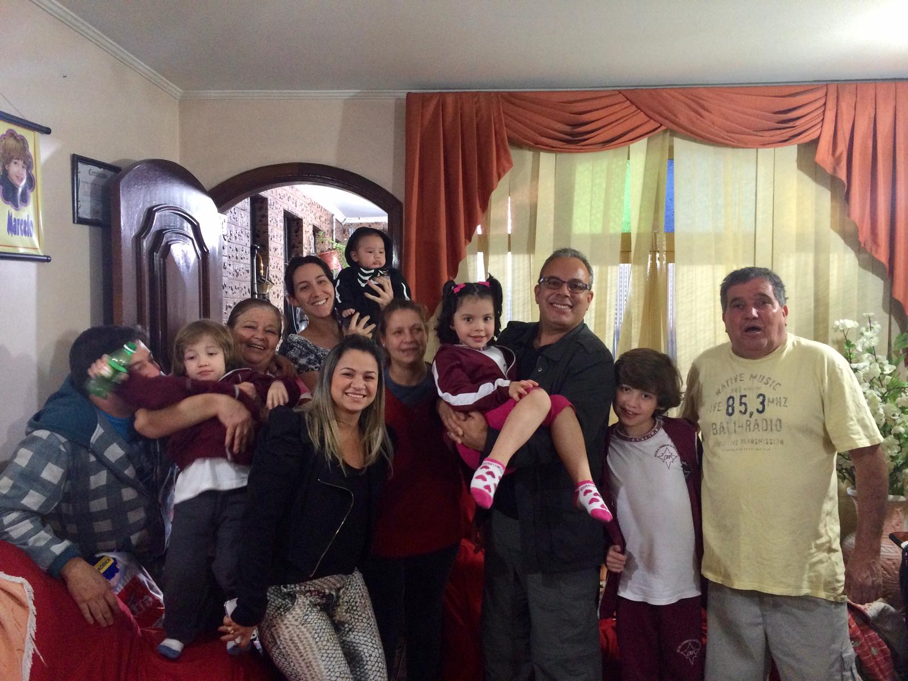

Sou aluno do Senac, fazendo o primeira ano do ensino médio e cursando multimídia. Programador de web com 2 anos de experiência. Ligado na parte de web design, tenho experiência com Photoshop, Fireworks, Illustrator e aprendendo Figma
08 Novembro, 2005
matheus081105@gmail.com
São Paulo, SP
Sobre mim
Para a melhor visualização, vou fazer uma lista destacando as principais características. Então vamos para a lista:
Esporte favorito:
Esporte é algo que não sou muito ligado e nem pratico muito, mas gosto muito de assistir jogo de vôlei e basquete, acho que são esses dois os meus favoritos. Vôlei foi algo que sempre gostei de jogar na escola (mesmo não sendo bom kkkkk), e acompanhar uma partida é bom demais. O basquete foi influência do meu pai, ele sempre gostou muito, e eu segui o caminho dele nisso.
Música favorita:
Sou apaixonado por música (quem não é). Gosto tanto que quase segui o caminho da produção musical, fiquei alguns meses estudando isso, fazendo umas músicas simples, mas depois de um tempo percebi que não era bom em fazer, só em ouvir. Quando me pergunta uma música favorita, não consigo falar direto um nome, gosto de muitas! Mas a que mais me marca por ter ouvido muito quando pequeno é Hey There Delilah, vou deixar o áudio dela aqui pra você ouvir.
Filme marcante:
Filme é algo que assisto bastante, dos diversos tipos. Meu favorito é de suspense, o frio na barriga que dá durante o filme todo, isso é muito bom (só pra deixar marcado, gosto muito dos livros do Stephen King, o suspense dele é perfeito). Quando digo filme favorito, ele não é de suspense por incrível que pareça (na sinopse tem classificado suspense e drama, mas no meu ver é bem mais drama). O jogo da imitação. O filme se trata de uma matemático tentando decifrar um código usado pelos alemães na Segunda Guerra Mundial para se comunicar com seus submarinos, não vou contar mais do filme para não ser spoiler. Recomendo todo mundo assistir.
Uma memória de infância:
Tenho muitas memórias da infância, tanto boas como ruins, não sei dizer uma exatamente que tenha me marcado de uma forma que seja impossível de se esquecer. Mas eu tenho uma memória bem forte, foi em uma festa de aniversário minha, fiz ela na casa do meu avô. Lembro direitinho do caminho que tinha feito pra ir na festa, lembro da hora que eu cheguei, aquele tanto de gente comemorando comigo, falando parabéns, todos eu conhecia, seja criança ou adulto, todos os rostos me eram familiares. Acho que esse dia me marca muito por ter sido na casa do meu avô, ele sempre se esforçava para fazer as coisas do meu gosto. Essa com certeza é minha melhor lembrança dele. Infelizmente, em setembro, meu avô faleceu devido a Covid-19. Sempre é bom eu me lembrar dos momentos bons que tive com ele, e isso eu tenho muitos. Descanse em paz vô

(Meu avô é o de camisa amarela)
Sonho para o futuro:
Quando falamos em sonho para o futuro, a primeira coisa que penso é na carreira profissional, admiro muito pessoas que se esforçam no trabalho, estudo, na sua carreira mesmo. Tenho diversos exemplos bons disso (e ruins também), e quero muito seguir esse caminho, né? Essa coisa de 'eu já sei o que vou ser quando crescer' com 15 anos nem sempre é vista com bons olhos, ou vão falar para você não se preocupar com isso ainda, ou que é cedo demais para já falar isso, mas eu penso que, se temos facilidade com a coisa, fazemos por pura vontade e temos a oportunidade de aprofundar no assunto, por que não seguir isso? Claro que pode haver obstáculos no caminho, mas isso todos temos, podemos chutar a pedra do caminho e seguir caminhando.